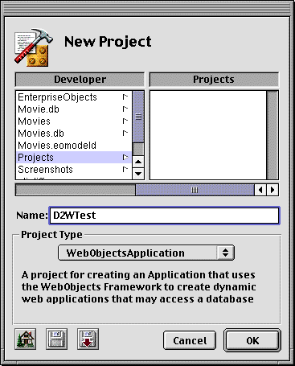
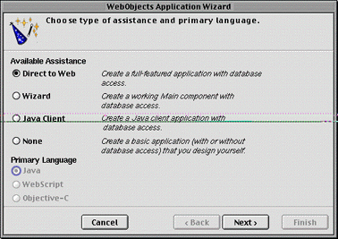
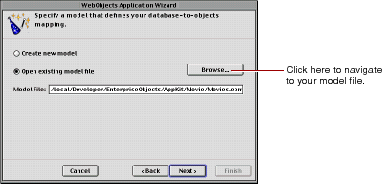
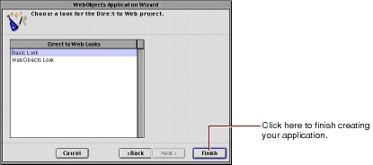

Table of Contents
Table of Contents  Next Section
Table of Contents
Next Section
Table of Contents  Previous Section
Previous Section

The first screen of the WebObjects application wizard appears.

You cannot select a language when the type of WebObjects application is Direct to Web; when you create a Direct to Web project, Java is the only available language.

You can also create a new model file. If you choose "Create new model," you are led through a series of screens that prompt you to create a new model. For more information about creating a new model file, see the chapter "Using EOModeler" in Enterprise Objects Framework Developer's Guide.
If the model you add to your project references entities in another model, you must add the other model to your project manually. The wizard doesn't include it automatically.
If you are just exploring Direct to Web, you can use a model file from one the Enterprise Objects example projects, such as Movies.eomodel in the Movies project.
The next screen offers a selection of user-interface styles ("looks") for your Direct to Web application; see "The Different Looks for WebObjects Applications" for more information. Click an item in the browser to select a look.

Table of Contents Next Section